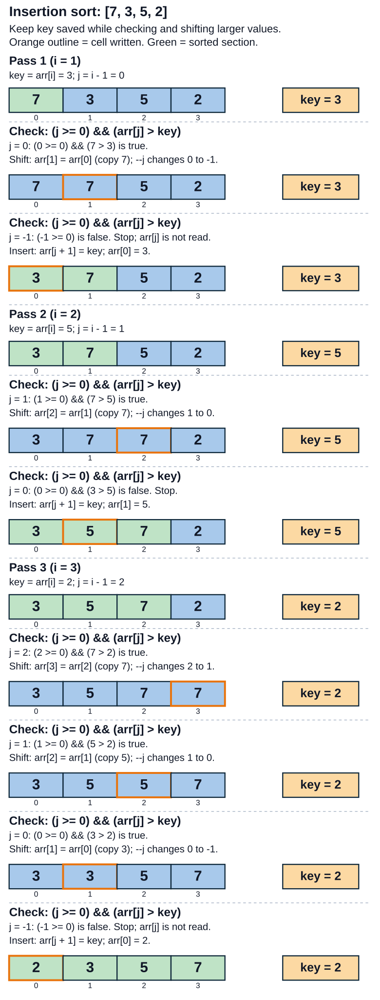
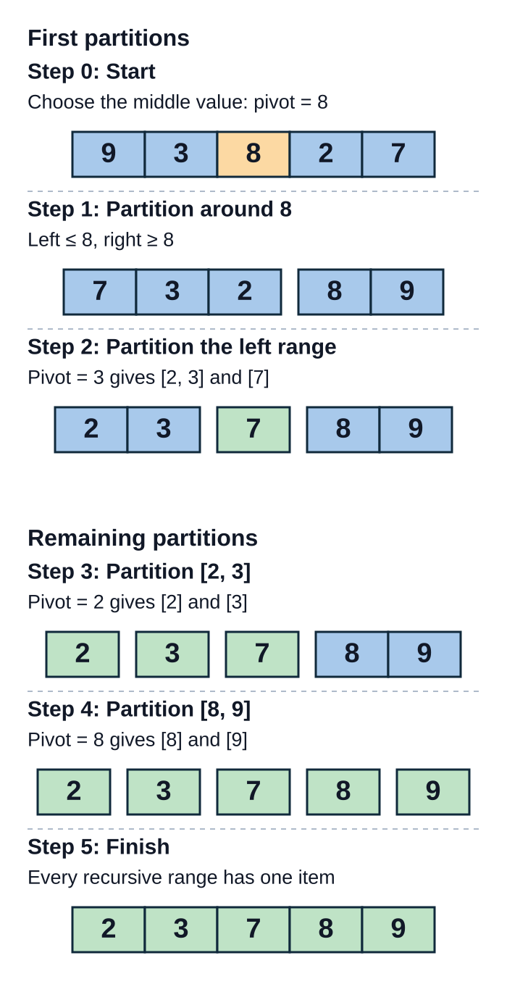
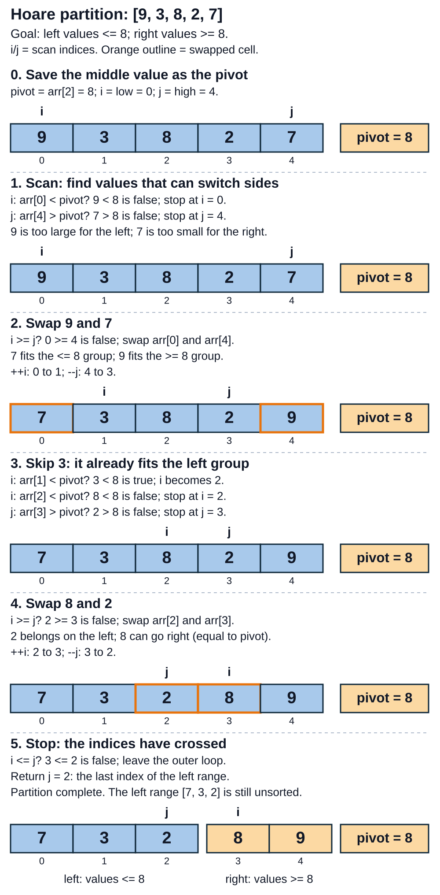
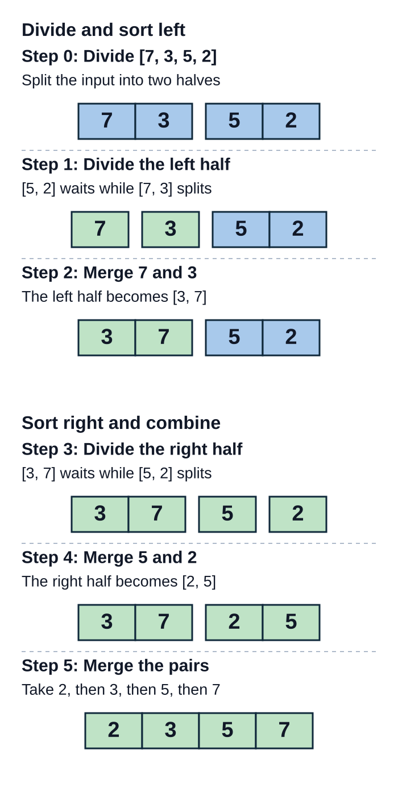
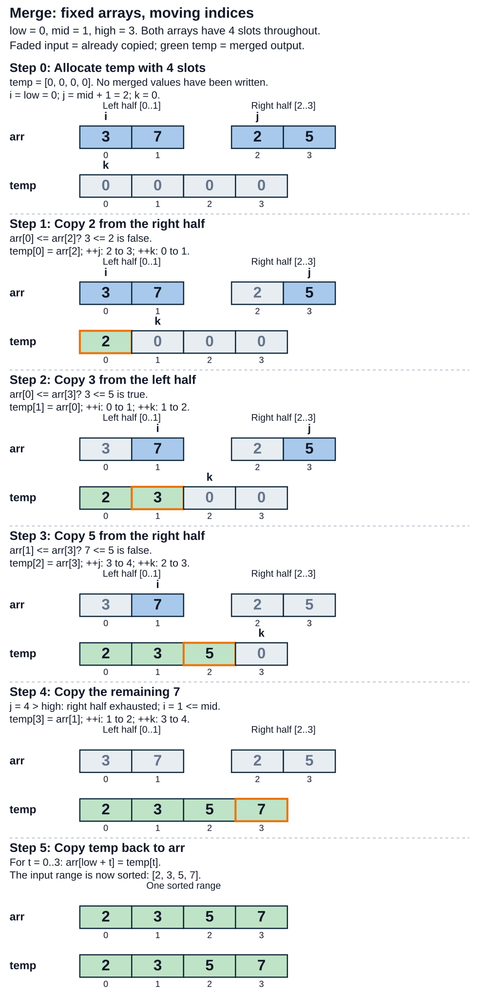
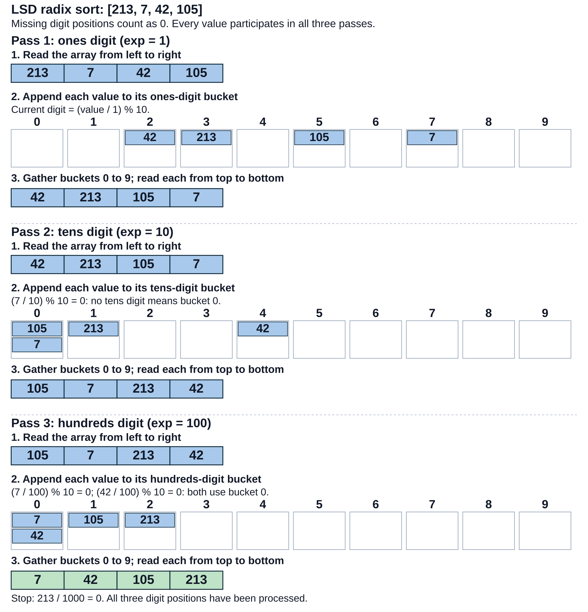

Sorting Algorithms
Liting Zhang
University of West Florida
What is sorting?
Sorting rearranges items into a chosen order.
Ascending order: smallest to largest.
Before:
[7, 3, 5, 2]After:
[2, 3, 5, 7]
Key: the value used for ordering.
For numbers: the number itself.
For students sorted by score: the score.
Keep each student’s name with their score.
Sorting families
| Family | How it determines order | Examples |
|---|---|---|
| Comparison | Compare pairs of keys | Insertion sort, quicksort, merge sort, heap sort |
| Non-comparison | Use key values or digits | Counting sort, radix sort, bucket sort |
Comparison sorts need a consistent ordering rule.
Non-comparison sorts need suitable key representations.
Stable sorting
Stable: preserve the input order of equal keys.
| Order | First item | Second item | Third item |
|---|---|---|---|
| Input | Alex: 80 | Blair: 70 | Casey: 80 |
| Stable result | Blair: 70 | Alex: 80 | Casey: 80 |
| Unstable result | Blair: 70 | Casey: 80 | Alex: 80 |
Key: score.
Alex precedes Casey in the input.
Both results sort the scores.
Only the stable result keeps Alex before Casey.
Arrays and linked lists
| Operation | Array | Linked list |
|---|---|---|
| Reach an item by index | Direct access, Θ(1) | Traverse nodes, Θ(n) worst case |
| Rearrange items | Copy or swap values | Relink nodes |
| Merge sorted ranges | Usually use an auxiliary array | Reconnect existing nodes |
Known nodes: relink in Θ(1).
Unknown position: traverse to find it.
Extra storage
Extra storage is memory beyond the input array.
Insertion sort: a saved key and indices.
Quicksort partition: a saved pivot and indices.
Merge sort: a temporary array.
Radix sort: buckets.
What is insertion sort?
Insertion sort: grow a sorted section from left to right.
The first item is already sorted.
Insert the next item into the sorted section.
Shift larger items right to make room.
Repeat until all items are processed.
How insertion sort works
Save
arr[i]askey.Shifting can overwrite its original position.
Start
jati - 1.Shift
arr[j]right whilej ≥ 0andarr[j] > key.Decrease
jafter each shift.
Stop at a value ≤ key or the array boundary.
Insert
keyatarr[j + 1].Repeat for the next
i.
Insertion sort: one complete run
Sorted section before pass
i:arr[0..i-1].
void insertionSort(int arr[], int n) {
for (int i = 1; i < n; ++i) {
int key = arr[i];
int j = i - 1;
while (j >= 0 && arr[j] > key) {
arr[j + 1] = arr[j];
--j;
}
arr[j + 1] = key;
}
}j >= 0guards the left boundary.>preserves the order of equal keys.

= 0 and arr[j] > key, then shows the array write and updated j, or the failed condition and key insertion. Final array: 2, 3, 5, 7.">Insertion sort: time complexity
Best case: Θ(n) (already sorted)
No shifting needed.
Average case: Θ(n²) (random order)
Many earlier values need to shift.
Worst case: Θ(n²) (reverse sorted)
Each new value shifts past all earlier values.
Insertion sort: space and uses
Θ(1) space: store only the key and indices.
In-place: rearrange the original array.
Stable: shift only strictly larger keys.
Good for small inputs.
Good for nearly sorted inputs.
Slow for large random inputs.
What is quicksort?
Quicksort: divide a range into smaller ranges.
Pivot: the reference value for partitioning.
Partition around the pivot.
Left range: values ≤ pivot.
Right range: values ≥ pivot.
Each range may still be unsorted.
Sort each range recursively.
Stop at ranges with at most one item.
Quicksort: partition and recurse
Partition around a pivot value, then sort each smaller range.
void quicksort(int arr[],
int low, int high) {
if (low >= high) return;
int split = partition(arr, low, high);
quicksort(arr, low, split);
quicksort(arr, split + 1, high);
}Base case:
low ≥ high.splitends the left range.Initial call:
quicksort(arr, 0, n - 1).

Hoare partition: one partition call
This implementation chooses the middle element.
Middle index:
mid = low + (high - low) / 2.For
[9, 3, 8, 2, 7],pivot = arr[2] = 8.Goal: values ≤ pivot on the left; values ≥ pivot on the right.
int partition(int arr[], int low, int high) {
int pivot = arr[low + (high - low) / 2];
int i = low, j = high;
while (i <= j) {
while (arr[i] < pivot) ++i;
while (arr[j] > pivot) --j;
if (i >= j) break;
std::swap(arr[i], arr[j]);
++i;
--j;
}
return j;
}Swaps group values around the saved pivot.
Equal values stop either scan.
Advance both indices after a swap.
Avoids getting stuck on equal values.

Quicksort: time complexity
Best case: Θ(n log n) (balanced partitions)
Ranges split into roughly equal halves.
Average / expected case: Θ(n log n)
Random pivots reduce repeated uneven splits.
Worst case: Θ(n²) (very uneven partitions)
Nearly all values remain in one recursive range.
Quicksort: storage and stability
Partition: Θ(1) extra storage
Uses a saved pivot and indices.
No extra array
Swap values within the input array.
Not stable
Distant swaps can reorder equal keys.
Pivot selection
Middle element: may not be the median.
Random pivot: choose a random element from the current range.
Reduces dependence on input order.
Median-of-three: median of the first, middle, and last values.
Neither choice guarantees balanced partitions.
What is merge sort?
Merge sort: sort smaller ranges before combining them.
Divide the array into halves.
Sort each half recursively.
Base case: at most one item.
Merge the two sorted halves.
Each half exposes its smallest unread value.
Copy the smaller of these two values next.
Merge larger ranges as recursive calls return.
Merge sort: divide, sort, and merge
Divide into halves, sort both halves, then merge their sorted values.
void mergeSort(int arr[], int low, int high) {
if (low >= high) return;
int mid = low + (high - low) / 2;
mergeSort(arr, low, mid);
mergeSort(arr, mid + 1, high);
merge(arr, low, mid, high);
}Left half:
[low..mid].Right half:
[mid+1..high].Range endpoints are inclusive.
Initial call:
mergeSort(arr, 0, n - 1).

Merging two sorted halves
Compare the first unread values.
Copy the smaller value to the temporary array.
On ties, choose the left value.
Advance the index of the copied value.
Repeat until one half is exhausted.
Copy the remaining values.
Copy the temporary array back.
Merge: implementation and trace
Merge the sorted halves of arr = [3, 7, 2, 5].
void merge(int arr[], int low, int mid, int high) {
std::vector<int> temp(high - low + 1);
int i = low, j = mid + 1, k = 0;
while (i <= mid && j <= high) {
if (arr[i] <= arr[j])
temp[k++] = arr[i++];
else
temp[k++] = arr[j++];
}
while (i <= mid)
temp[k++] = arr[i++];
while (j <= high)
temp[k++] = arr[j++];
for (int t = 0; t < k; ++t)
arr[low + t] = temp[t];
}i,j: next unread input positions.temp:high - low + 1slots, initialized to zero.k: next output position.<=: preserve equal-key order.

Merge sort: complexity
Best, average, and worst cases: Θ(n log n)
Sorted input still goes through splitting and merging.
Auxiliary space: Θ(n)
Merging needs a temporary array.
Merge sort variations
| Variation | Approach |
|---|---|
| Top-down | Divide recursively, then merge |
| Bottom-up | Merge runs of length 1, 2, 4, … |
| Natural | Reuse runs that are already sorted |
Linked lists: merge by relinking nodes.
Sort independent halves in parallel.
What is LSD radix sort?
Radix sort: order values one digit at a time.
LSD: least significant digit first.
Process ones, then tens, then hundreds.
Bucket: values sharing the current digit.
This example uses nonnegative, base-10 integers.
Use
0for a missing digit position.7: tens and hundreds digits are0.42: hundreds digit is0.
How a radix pass works
Scan the array from left to right.
Append each value to its current-digit bucket.
Gather buckets in digit order: 0 through 9.
Preserve arrival order within each bucket.
Earlier digit ordering stays intact.
Repeat for the next digit position.
Stop after the largest value's highest digit position.
Radix sort: implementation and trace
Trace three passes for [213, 7, 42, 105]; missing positions count as 0.
// All input values must be nonnegative.
void radixSort(std::vector<int>& arr) {
if (arr.empty()) return;
int maxValue = *std::max_element(
arr.begin(), arr.end());
for (long long exp = 1;
maxValue / exp > 0; exp *= 10) {
std::vector<int> buckets[10];
for (int value : arr) {
int digit = (value / exp) % 10;
buckets[digit].push_back(value);
}
int out = 0;
for (const auto& bucket : buckets)
for (int value : bucket)
arr[out++] = value;
}
}maxValue = 213: process ones, tens, and hundreds.exp: current place value (1, 10, 100, …).(value / exp) % 10: extract the current digit.

Why each radix pass must be stable
Before the hundreds pass: [105, 7, 213, 42].
Hundreds bucket
0:[7, 42].Keep
7before42.The tens pass already established this order.
Final order:
[7, 42, 105, 213].Incorrect if bucket 0 is reversed:
[42, 7, 105, 213].
Base and digit count
| Base k | Possible digits | Buckets per pass |
|---|---|---|
| 2 | 0 and 1 | 2 |
| 10 | 0 through 9 | 10 |
| 256 | 0 through 255 | 256 |
k: base (number of buckets).d: number of digit positions.Higher base: usually fewer passes.
Higher base: more buckets.
Example: decimal 255 needs 8 binary digits, 3 decimal digits, or 1 base-256 digit.
Radix sort: complexity
Best, average, and worst cases: Θ(d(n + k))
Same digit passes for any input order.
Auxiliary space: Θ(n + k)
Buckets store the values during a pass.
Fixed base and digit count: Θ(n)
The number of passes stays constant.
Parameters
n: number of values.d: digit positions.k: base (number of buckets).
Time comparison
| Algorithm | Best | Average / expected | Worst |
|---|---|---|---|
| Insertion sort | Θ(n) | Θ(n²) | Θ(n²) |
| Quicksort | Θ(n log n) | Θ(n log n)* | Θ(n²) |
| Merge sort | Θ(n log n) | Θ(n log n) | Θ(n log n) |
| LSD radix sort | Θ(d(n + k)) | Θ(d(n + k)) | Θ(d(n + k)) |
*Quicksort’s average bound assumes random input order. Random pivots give the expected bound for any fixed input.
Radix costs depend on key representation: d digit positions and base k.
Extra storage and stability
| Algorithm | Extra arrays or buckets | Stable? |
|---|---|---|
| Insertion sort | None | Yes, when shifting only larger keys |
| Quicksort | None | No, for this partition |
| Merge sort | Θ(n) temporary array | Yes, when left wins ties |
| LSD radix sort | Θ(n + k) buckets | Yes, with stable digit passes |
Choosing for the input
| Situation | Reasonable choice | Reason |
|---|---|---|
| Small or nearly sorted array | Insertion sort | Few values need to shift |
| General array, limited buffer space | Quicksort | Partitions inside the input array |
| Stable array sort with a worst-case guarantee | Merge sort | Θ(n log n) time with an auxiliary array |
| Linked list | Merge sort | Merge by reconnecting nodes |
| Suitable bounded integer keys | Radix sort | Process digits with stable passes |
Choose from the input, memory budget, stability requirement, and time guarantee.
Check your understanding
1. Why does insertion sort save the key before shifting?
Answer: Shifting overwrites the key’s original slot. The saved copy lets us insert it later.
2. Does a Hoare split index identify the pivot’s final position?
Answer: It identifies the boundary between the next recursive ranges. The pivot can be elsewhere.
3. Why must radix sort preserve arrival order inside a bucket?
Answer: It must preserve the ordering by less significant digits established in earlier passes.